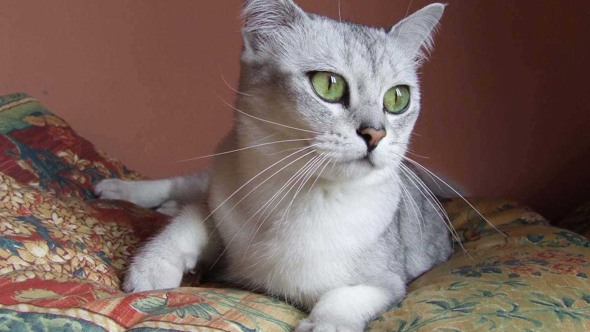

Gato Burmilla
Historia de los Burmilla
La historia cuenta que en 1981, una gata Chinchilla Persa llamada "Bambino Lilac Fabergé" fue criada por Miranda B. B. Clarke en Inglaterra. Un día, mientras estaba criando a Bambino, Clarke permitió que uno de sus gatos British Shorthair, llamado "Sanquist", entrara en la habitación donde se encontraba Bambino. Como resultado de este encuentro, Bambino quedó preñada y dio a luz a una camada de gatitos.
Aspecto Burmilla
Entre estos gatitos, había uno en particular que llamó la atención de Miranda Clarke y su compañera Lesley Ann. Este gatito tenía un pelaje plateado con reflejos dorados y ojos verdes, lo que lo hacía excepcionalmente hermoso. Decidieron mantenerlo y lo llamaron "Sanquist Silver Chinchilla". Este gatito, al crecer, se cruzó con una hembra de la misma camada, una gata British Blue, dando lugar a una nueva camada con características distintivas. Los gatitos de esta camada tenían pelaje plateado, pero también mostraban algunos rasgos de pelaje corto y orejas más anchas, similares a los del British Shorthair.
Después de varias generaciones de cría selectiva, los criadores británicos comenzaron a reconocer la raza como única y le dieron el nombre de "Burmilla" en honor al famoso río Birmania. En 1984, la Asociación Felina de la GCCF (Governing Council of the Cat Fancy) en el Reino Unido reconoció oficialmente al Burmilla como una raza experimental.
Aspecto
El Burmilla es un gato de tamaño mediano a grande, con una estructura corporal bien proporcionada y musculosa. es un gato elegante y hermoso, con un pelaje plateado brillante y una expresión facial encantadora. Su combinación de características físicas y su personalidad amigable lo convierten en una mascota popular entre los amantes de los gatos.
Comportamiento
El Burmilla es conocido por tener un comportamiento encantador que lo convierte en una mascota muy querida. es un gato encantador y amigable que suele llevarse bien con todos en la familia. Su naturaleza cariñosa, combinada con su inteligencia y curiosidad, lo convierten en un compañero ideal para aquellos que buscan una mascota amorosa y entretenida.
Cuidados
Los cuidados del Burmilla no son muy diferentes de los cuidados generales que necesitan la mayoría de los gatos.
1. Alimentación: Proporciona una dieta equilibrada y nutritiva específicamente formulada para gatos. Consulta con tu veterinario para determinar las necesidades dietéticas específicas de tu gato Burmilla, según su edad, peso y nivel de actividad.
2. Higiene: Cepilla regularmente el pelaje del gato Abisinio para eliminar el pelo suelto y prevenir la formación de nudos. También debes recortar sus uñas según sea necesario y limpiar sus orejas y dientes regularmente para prevenir problemas de salud.
3. Actividad física: Los gatos Burmilla son muy activos y disfrutan de jugar y explorar. Proporciona juguetes y oportunidades de juego para mantener su mente y cuerpo activos. También es importante proporcionarle suficiente espacio para trepar y explorar.
4. Atención veterinaria: Programa visitas regulares al veterinario para chequeos de rutina, vacunas y atención médica preventiva. Presta atención a cualquier signo de enfermedad o malestar y consulta a tu veterinario si notas algo inusual en el comportamiento o la salud de tu gato.
Caja de arena: Proporciona una caja de arena limpia y accesible para que tu gato haga sus necesidades. Limpia la caja de arena diariamente y cámbiala por completo con regularidad.
6. Entorno seguro: Asegúrate de que tu hogar sea un lugar seguro para tu gato Burmilla, eliminando cualquier objeto peligroso o tóxico y proporcionando áreas seguras para descansar y jugar.
7. Control de parásitos: Mantén a tu gato Burmilla protegido contra pulgas, garrapatas y otros parásitos externos mediante el uso de productos antipulgas recomendados por tu veterinario.
Alimentacion
Los gatos Burmilla, al igual que todos los gatos, necesitan una dieta equilibrada y nutritiva para mantenerse saludables. Aquí hay algunas pautas generales sobre los mejores alimentos para darle a un gato Burmilla:
1. Alimentos comerciales para gatos: Los alimentos comerciales para gatos, ya sean croquetas o comida húmeda enlatada, suelen proporcionar una nutrición completa y equilibrada para los gatos. Es importante elegir alimentos de alta calidad que estén formulados específicamente para las necesidades nutricionales de los gatos y que cumplan con las normas de la AAFCO (Asociación Estadounidense de Oficiales de Control de Alimentos).
2. Alimentos secos: Los alimentos secos para gatos son convenientes y pueden ayudar a mantener la salud dental de tu gato al promover la masticación. Busca alimentos secos que contengan proteínas de alta calidad, como pollo, pavo, pescado o carne de res, y evita aquellos que contengan rellenos o subproductos de baja calidad.
3. Alimentos húmedos enlatados: Los alimentos húmedos para gatos son una excelente fuente de hidratación y pueden ser especialmente beneficiosos para los gatos que no beben suficiente agua. Busca alimentos húmedos que estén hechos con ingredientes naturales y que proporcionen una mezcla equilibrada de proteínas, grasas y carbohidratos.
4. Dieta casera: Algunos dueños de gatos prefieren alimentar a sus mascotas con una dieta casera preparada en casa. Si optas por esta opción, es importante trabajar con un veterinario o un nutricionista de mascotas para asegurarte de que la dieta sea completa y equilibrada, y que cumpla con las necesidades nutricionales específicas de tu gato Burmilla.
Siguiendo estos cuidados básicos y brindándole amor y atención adecuados, tu gato Burmilla estará en condiciones óptimas de salud y felicidad.